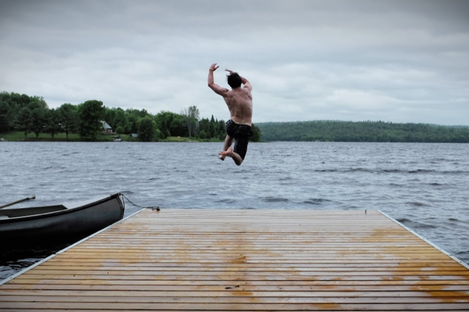
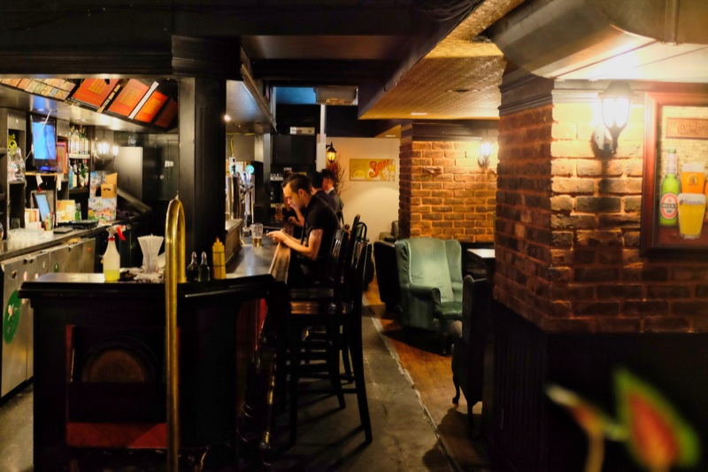

Day 40
Taken June 16th, 2014
Ottawa, Canada
Fuji X100s 23mm 1/250 @ f/8.0 ISO 200
Taken June 16th, 2014 Ottawa, Canada Fuji X100s 23mm 1/250 @ f/8.0 ISO 200...
Photo-a-day by Matt Thompson started May 8th, 2014.
Taken June 16th, 2014
Ottawa, Canada
Fuji X100s 23mm 1/250 @ f/8.0 ISO 200
Taken June 15th, 2014
Calabogie, Canada
Fuji X100s 23mm 1/500 @ f/8.0 ISO 320

Taken June 14th, 2014
Calabogie, Canada
Fuji X100s 23mm 1/400 @ f/8.0 ISO 1000
Taken June 13th, 2014
Ottawa, Canada
Fuji X100s 23mm 1/320 @ f/11.0 ISO 200
Taken June 12th, 2014
Ottawa, Canada
Fuji X100s 23mm 1/60 @ f/11.0 ISO 2500

Taken June 11th, 2014
Ottawa, Canada
Fuji X100s 23mm 1/30 @ f/2.7 ISO 3200
Taken June 10th, 2014
Ottawa, Canada
D'awwwwwwww.
Fuji X100s 23mm 1/500 @ f/4.0 ISO 1250
Taken June 9th, 2014
Ottawa Canada
Fuji X100s 23mm 1/250 @ f/5.6 ISO 320
Taken June 8th, 2014
Ottawa, Canada
A live squirrel, this time.
Fuji X100s 23mm 1/1000 @ f/4.0 ISO

Taken June 7th, 2014
Ottawa, Canada
Treat yo'self, goslings.
Fuji X100s 1/125 @ f/4.0 ISO 200
Taken June 6th, 2014
Ottawa, Canada
Fuji X100s 1/2000 @ f/4.0 ISO 1250
Taken June 5th, 2014
Ottawa, Canada
Fuji X100s 1/4 @ f/5.6 ISO 1600